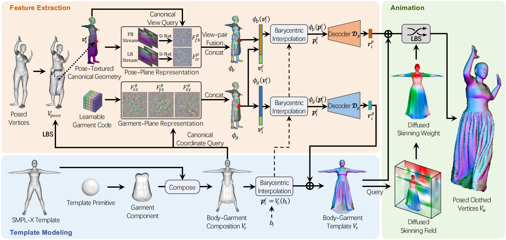
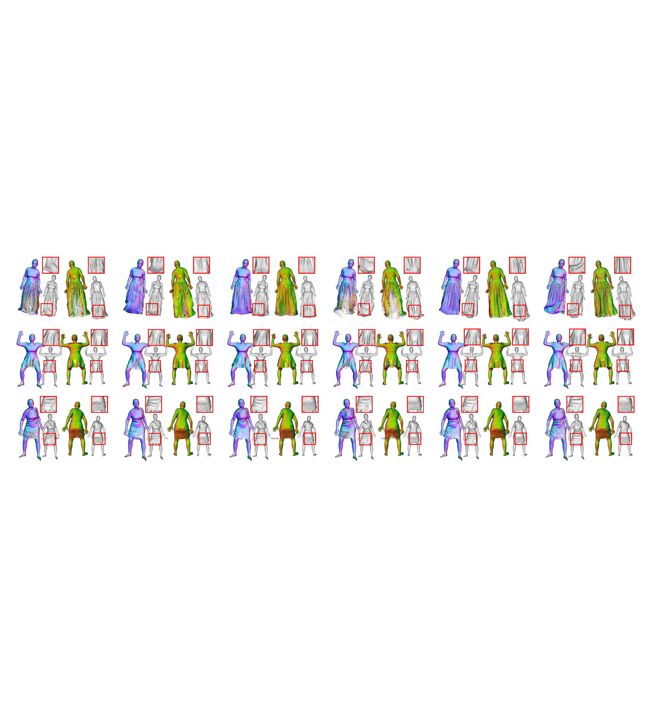
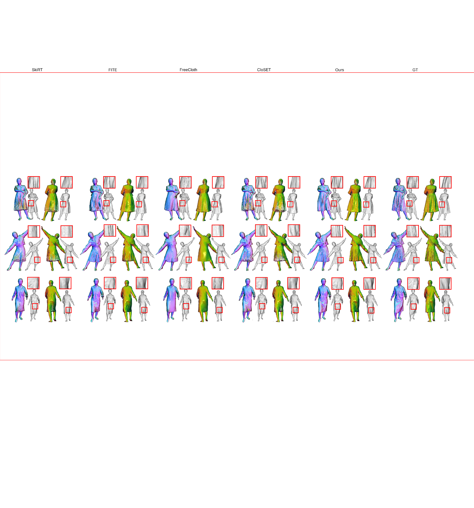
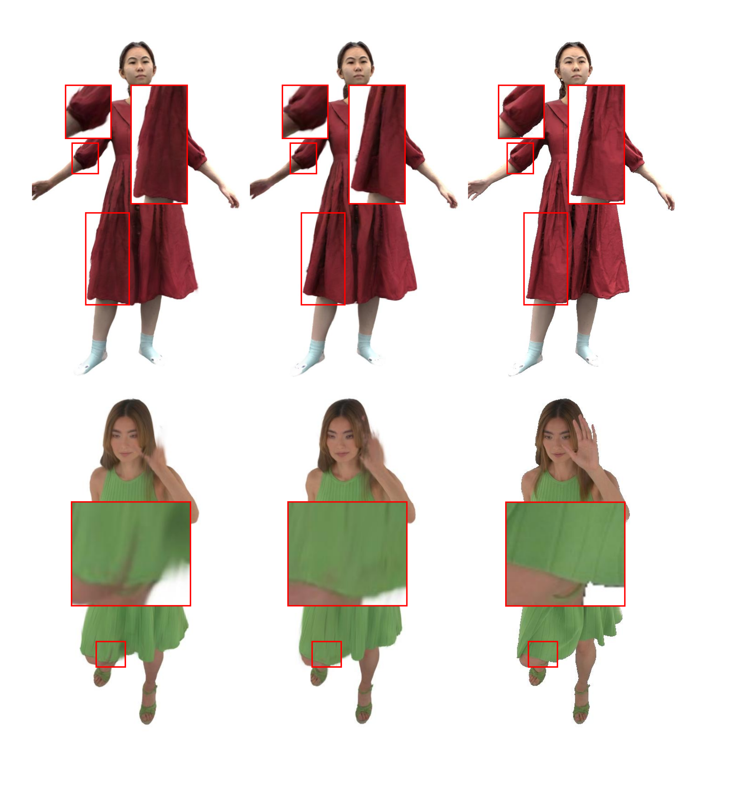

Creating animatable clothed humans from static scans requires recovering the clothed surface and modeling its deformation under novel body poses, especially for loose garments such as skirts and dresses. Existing learning-based methods typically rely on minimally clothed parametric body templates. These representations often struggle to support loose garments that deviate from the body surface, making it difficult to capture fine pose-dependent wrinkles under challenging clothing. To address this limitation, we propose ETCloth, a framework that learns an explicit body-garment template for clothed human modeling. ETCloth augments the body template with an explicit garment component and establishes a unified canonical support for both body and loose-garment regions. On this support, we model garment-related deformation and pose-dependent deformation in a disentangled manner. The garment-related deformation forms a stable body-garment template with diffused skinning weights, which supports stable articulation of loose garments under novel poses. Experiments on synthetic and real-captured clothed human datasets demonstrate that ETCloth produces more faithful global silhouettes, cleaner local geometry, and more plausible wrinkle details than existing methods.
Project video will be added with the final paper release.

Qualitative results on synthetic ReSynth and real-captured THuman-CloSET data. We further replace the canonical template of Animatable Gaussians with our template, which better preserves dress silhouettes and local folds on THuman-CloSET and ActorsHQ.



@article{lu2026etcloth,
title = {ETCloth: Learning Explicit Template for Human Modeling in Challenging Clothing},
author = {Lu, Zhiyuan and Lin, Siyou and Yu, Jingzhou and Deng, Qiaoling and Liu, Yebin and Zhang, Hongwen},
journal = {Under Review},
year = {2026}
}